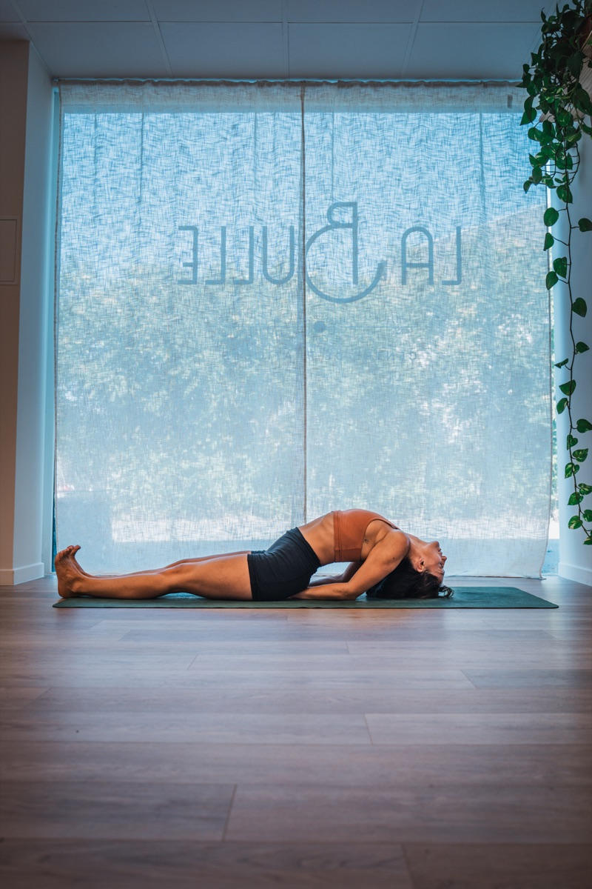

Depuis toute petite, j'ai un sommeil perturbé. M'endormir a toujours été un combat. Pendant longtemps, je n'y prêtais pas vraiment attention… jusqu'à ce que le yoga entre dans ma vie.
Sans même chercher à « travailler mon sommeil », il m'a doucement guidée : me coucher plus tôt, me lever plus tôt, prendre soin de mon hygiène de vie. Et peu à peu, mes nuits se sont apaisées.
Aujourd'hui, il m'arrive encore de traverser des nuits difficiles — aux changements d'heure, ou quand l'esprit est trop plein. Mais j'ai appris à en prendre soin, et l'équilibre est bien plus doux qu'avant. Le sommeil reste un chemin, pour moi comme pour beaucoup. Alors si c'est un sujet sensible pour toi aussi, je t'emmène avec moi dans cet article. 💛
Le sommeil, un pilier de vie

En ayurvéda, Nidra (le sommeil) est l'un des 3 piliers de la santé. Autant dire que ce n'est pas un détail : il soutient tout notre corps.
Le sommeil, c'est ce moment où notre conscience se déconnecte du corps physique pour entrer en contact avec une conscience plus vaste. Un moment d'abandon, de lâcher-prise total, où le corps se régénère, récupère et digère la journée. Le cerveau en profite pour nettoyer les toxines accumulées, intégrer les expériences vécues et se réparer.
Pas besoin de grand discours pour le comprendre : repense simplement à comment tu te sens après une bonne nuit… et après une nuit compliquée. Le sommeil régule notre digestion, nos émotions, notre capacité à faire face au stress, et même notre enthousiasme.
Personnellement, je le sais : quand je manque de sommeil, je suis moins patiente, plus à fleur de peau, et ma digestion s'en ressent. Observe ce que ça produit chez toi. Plus on y met de conscience, plus on réalise le rôle immense que joue le sommeil dans nos vies — et qu'en améliorer la qualité peut dénouer beaucoup de choses en profondeur.
Une chose à retenir : le lever conditionne le coucher, et le coucher conditionne le lever. Tout est lié.
Suivre le rythme de la nature
En ayurvéda, le corps est le reflet de la nature. L'idéal ? Se coucher avec le soleil, se lever avec le soleil. En Occident, c'est plus compliqué (l'ensoleillement varie fortement selon les saisons, et le changement d'heure n'aide pas), mais le principe reste un repère précieux.
Les doshas, les énergies de nos journées. En ayurvéda, nos journées sont traversées par trois grandes énergies, les doshas : Vata (le mouvement), Pitta (le feu, la transformation) et Kapha (la stabilité). Le soir, entre 18 h et 22 h, règne Kapha : lourd, doux, apaisant — le moment idéal pour se laisser glisser dans le sommeil. Après 22 h, on bascule dans l'énergie plus ardente de Pitta, et c'est souvent là qu'arrive ce fameux « second souffle » qui repousse l'endormissement. Avant 6 h du matin, l'énergie légère de Vata rend le réveil facile et plein d'élan — parfait pour le yoga et la méditation. Après 6 h, Kapha revient… et nous cloue au lit !
Notre corps est un véritable miroir de la nature. Le jour, la lumière du soleil nourrit notre énergie ; le soir venu, elle laisse place à la mélatonine, l'hormone du sommeil, qui se diffuse doucement en nous et nous invite au repos. C'est pour cela qu'au fond, rien n'est plus naturel que de suivre le rythme du soleil pour s'endormir.
Quand le sommeil se dérègle
Il y a une différence essentielle entre s'endormir naturellement et s'endormir par épuisement. Le premier répare ; le second dérègle le système. L'endormissement naturel naît d'une bonne hygiène de vie et de la régularité. L'endormissement par épuisement, lui, survient après une journée trop chargée, trop d'activité (ou, à l'inverse, trop de léthargie) — et répété, il peut installer l'insomnie.
Les causes sont multiples, mais la plus fréquente, on la connaît toutes et tous : un mental qui ne s'arrête pas. Des pensées qui tournent, des émotions trop vives, des journées trop remplies, des écrans tard le soir… En ayurvéda, c'est toujours Vata — l'énergie du mouvement et de l'air — qui s'emballe : trop d'agitation à l'intérieur, et le repos devient difficile à trouver.
« Pressions douloureuses dans toutes les parties du corps, lourdeur de la tête et des yeux, bâillements excessifs, lassitude, épuisement même sans effort, vertige, indigestion, stupeur — et finalement, les maladies d'origine Vāta. » — Aṣṭāṅga Hṛdayam, Sūtrasthāna VII.64
À l'inverse, un bon sommeil se reconnaît à l'enthousiasme, la joie, l'énergie, la vitalité. L'enthousiasme est le premier indicateur : s'il manque au réveil, c'est souvent le signe d'un sommeil à rééquilibrer.
Et en cas de réveil nocturne ? Rester à se tourner et se retourner pendant des heures ne sert à rien — je l'ai fait tant de fois, ça ne crée que ruminations et agacement. Mieux vaut se lever, dans l'obscurité, sans allumer aucun écran. S'asseoir dans une autre pièce pour méditer, s'allonger au sol pour une relaxation, ou prendre l'air sous la lumière de la lune. Rien de stimulant : simplement revenir à soi. L'endormissement reviendra plus facilement.
Pourquoi le yoga aide à mieux dormir
Le soir, notre système nerveux est souvent encore en mode « alerte » : le mental tourne, les pensées s'enchaînent, le corps reste sous tension. C'est justement là que le yoga agit en profondeur. En reliant le souffle à des postures douces, on active la réponse de détente du corps (le système nerveux parasympathique) : le rythme cardiaque ralentit, les tensions se relâchent, le flot des pensées s'apaise. Peu à peu, le corps reçoit le message qu'il peut lâcher prise — et se prépare naturellement à l'endormissement. C'est tout le sens d'une séance du soir : non pas « performer », mais créer les conditions du repos.
Ce qui aide vraiment à bien dormir
La journée influence la nuit, et la nuit influence la journée : c'est un cercle vertueux. La régularité est donc la première clé.
- Des horaires réguliers, même le week-end : ton horloge interne se cale, et le corps s'endort et se réveille plus facilement. L'idéal : se coucher tôt, se lever tôt.
- Le moins d'écrans possible, surtout l'heure avant le coucher — ou, pourquoi pas, le téléphone en mode avion dès que tu rentres chez toi. En prime, tu ouvres de l'espace pour des moments plus doux : lecture, yoga, temps avec tes proches.
- Une séance de yoga douce le soir, avec allongement de l'expiration : torsions au sol, postures de repli, un pranayama apaisant (anuloma, chandra bhedana, bhramari), des mantras doux (om, chhh, mmm).
- Une chambre fraîche, rangée, minimaliste, où l'on se sent bien.
- De l'exercice dans la journée, sans excès : de mon côté, je marche au moins une heure par jour en nature — ça m'expose à la lumière du jour et met mon corps en mouvement.
- Un repas tôt et léger le soir, pour que la digestion ne perturbe pas la nuit.
- S'exposer à la lumière du jour, chaque jour, même quand il ne fait pas beau.
Se coucher plus tôt fait souvent râler : « c'est mon seul moment pour me détendre ! » Mais réfléchis : que fais-tu pour te détendre ? Regarder un écran, scroller ? Tout cela surstimule et bloque justement la détente. Rien de moralisateur ici — je suis passée par là. Ta journée t'appartient, et te coucher une heure plus tôt ne te fera pas perdre du temps : au contraire, tu en gagneras, et tu vivras tes journées plus apaisée. Ça vaut le coup, non ?
Mon expérience des horaires
Les troubles du sommeil, je les connais intimement. Et voilà ce que j'ai appris sur moi : je ne peux pas bien dormir sans me coucher tôt et me lever tôt. Je me couche vers 21 h et je me lève vers 5 h. Ça peut paraître rigide, mais c'est ce qui me permet de m'endormir facilement et de me réveiller pleine d'énergie et d'enthousiasme. Si je rate ce rythme et me couche après 22 h, je le sens aussitôt : je dors mal, je me sens moins bien dans la journée, et bonjour les sautes d'humeur.
Bien sûr, il m'arrive de me coucher plus tard — il ne s'agit pas de devenir rigide. Mais autant que possible, je garde ce cap. Non pas parce qu'on me l'a dit, mais parce que j'en ressens moi-même les bienfaits.
Ma routine du soir
Je coupe les écrans vers 19 h. En rentrant, je prends une bonne douche chaude, puis je m'auto-masse à l'huile de sésame tiédie — ça apaise profondément le système nerveux. Je prépare un repas léger et ancrant, souvent une soupe. Je pratique une douce séance de yoga au sol, un pranayama, une méditation, puis je lis un peu. Cette routine est essentielle : mon corps reconnaît qu'il est temps de dormir.
🎁 Une mini-routine à tester ce soir
- Auto-massage à l'huile de sésame tiédie : pieds, mains, visage et cuir chevelu — avec conscience et douceur.
- Lumière tamisée : une bougie ou une lampe de sel rose.
- Quelques postures au sol : posture de l'enfant, torsions douces, apanasana (genoux vers la poitrine), bébé heureux, et l'angle couché (supta baddha konasana).
- Pranayama : ujjayi en samavritti. Un léger frein à l'arrière de la gorge ralentit l'air, à l'inspire comme à l'expire (par le nez uniquement) : il en naît un doux son de vague, qui berce le mental. On le pratique en « respiration carrée » — quatre temps égaux : inspire · rétention · expire · rétention, sur ton unité (4, 6 ou 8 secondes). Ce rythme équilibré apaise le système nerveux et prépare au sommeil.
Pour finir
Le sommeil n'est pas un objectif à atteindre ni une performance : c'est un pilier de vie, un indicateur précieux de nos déséquilibres — qui peuvent tous être rééquilibrés par des pratiques adaptées.
Et surtout : rien ne vaut ta propre expérience. Le yoga ne se croit pas, il se vit et se ressent. Alors essaie, observe, et laisse ton corps te montrer ce qui lui fait du bien.
Avec douceur, Alizée 🌙
Envie d'explorer ces pratiques douces ensemble ? Je donne des cours de yoga doux & traditionnel, tous niveaux, en studio autour d'Annecy : au cocon de La Bulle (Argonay) et chez Pure Vitality (Seynod).
Voir le calendrier et réserver